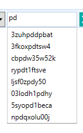

To enable auto completion features, once can use the services and behaviors provided by Catel. There are two components required for auto completion:
- AutoCompletionService => takes care of the actual filtering
- AutoCompletionBehavior => can be attached to a TextBox to support a dropdown with recommended values
The auto completion features looks like the screenshot below:

AutoCompletion service
The default implementation automatically filters the collection specified. If there is no filter yet, it will filter the top 10 occurrences from the collection. When a filter is available, it will do the same but with the filter applied.
AutoCompletion behavior
The behavior can be used as follows:
<catel:AutoCompletionBehavior PropertyName="{Binding PropertyName, Mode=OneWay}"
ItemsSource="{Binding RawCollection}" IsEnabled="{Binding EnableAutoCompletion}"/>
If the PropertyName is null or whitespace, the ItemsSource will be treated as collection of strings to be filtered directly